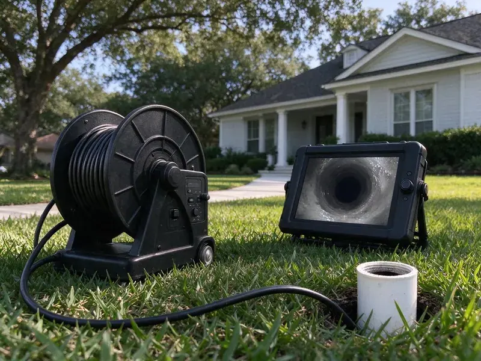

Sewer Cleaning in Euclid, OH
Roots, grease and wipes choke sewer lines across Euclid, OH. We cut them out, flush the line and verify flow on camera.
- Licensed and Insured Crew
- Video Proof of Results
- Written Guarantee
- Licensed, Experienced Plumbers
Book Sewer Cleaning in Euclid, OH
We clear the main, run a camera and walk you through the video before we leave.
Main Sewer Cleaning for Euclid, OH Homes
HRL Plumbing cleans main sewer lines from the house to the city tap or septic tank. We use heavy sectional cables with root saws. When the line calls for it, high-pressure water jetting follows to scour grease and fine roots off the pipe wall and flush them downstream.
Work we handle every week:
- Root saws and blade cutters sized to the pipe
- Hydro jetting to scour grease and scale from main lines
- Recorded color camera inspections

Additional Drain Services Services in Euclid, OH
From stubborn kitchen clogs to main sewer backups, our drain services in Euclid, OH restore full flow fast and keep it that way.


Customers
Why Choose HRL Plumbing for Sewer Cleaning in Euclid, OH?
Sewage in a house is a health problem first. We treat backups as urgent. Every sewer truck carries what it takes to clear the main and start cleanup, so you are not waiting on a second crew.
- Current Equipment, Color cameras and high-pressure jetters let us see the pipe and clean it wall to wall.
- Camera Verified, We record the line after cleaning so you can see it is open and spot any damage.
- Local Experience, HRL Plumbing knows the soil and tree types around Euclid, OH that work their way into sewer lines.
Citywide Coverage
Sewer cleaning is a phone call away anywhere in Euclid. One price list for the whole town. You pay the same whether you live near downtown or out on the edge of the service area, and you get the same equipment and the same camera check.
Experienced Team
Licensed plumbers run our sewer calls. No jargon, no pressure. You will hear what the blockage was, why it formed and what your options are, from a simple maintenance schedule to a full repair or a liner.
Safety-First Approach
Cleanouts and sewer repairs follow local plumbing code. Permits when required. Any repair that requires a permit gets one, along with the inspection your city requires.
Trusted Certified Euclid Plumbing Services Professionals
At HRL Plumbing, we are proud to offer certified plumbing services throughout Euclid, OH. Those papers on the wall mean something. Our plumbers hold recognized industry credentials, and they follow strict safety and quality rules on every repair, installation and maintenance call we run.
Call Us Now PHCC Plumbing Contractor Recognition
PHCC Plumbing Contractor Recognition Better Business Bureau (BBB) Accreditation
Better Business Bureau (BBB) Accreditation Angi Certified Pro
Angi Certified Pro ISO 9001 Quality Management Certification
ISO 9001 Quality Management CertificationMain Line and Sewer Clearing in Euclid, OH
Scheduled Sewer Cleaning in Euclid, OH
History predicts the next backup. We set a cleaning interval. Homes with past root problems, older cast iron or a lot of kitchen grease do well on a cleaning every 12 to 24 months, timed before the growth or buildup closes the line.

Hydro Jetting for Sewer Lines in Euclid
Jetting cleans the whole pipe wall. A cable only makes a path. Water at 3,000 to 4,000 PSI strips grease, scale and fine roots off the inside of the line and flushes it all toward the street, which leaves the pipe close to its original diameter.
Preventative Sewer Maintenance in Euclid
Roots come back after cutting. Plan on regrowth in 12 to 18 months. A scheduled cleaning every year or two keeps roots and grease from closing the line and lets you plan around it.
Root Removal From Sewer Lines in Euclid
Trees send roots toward any moisture they can find. Leaky joints feed them all year. Our root saw cuts the mass loose, and heavy growth gets a jetter pass to clean out the fine hairs, and a camera shows where roots are entering so you can choose between lining and repair.
Jetting a Sewer Line in Euclid, OH
Grease and scale are jetting work. A cable only scratches them. A jetter nozzle with rear-facing jets pulls itself down the line and blasts the buildup off the pipe wall, restoring close to the full diameter of the pipe and slowing the next clog.
Grease and Scale Buildup Cleaning in Euclid, OH
Grease bonds with mineral scale into a hard crust. Homeowners around Euclid often install a softener to protect water heaters and cut down on spotting on fixtures. Over years the opening shrinks. A cable can punch a hole through the crust, but a jetter cleans the walls back to full size and leaves less for new grease to grab onto, and the method depends on pipe material and condition.
Cast Iron Sewer Cleaning in Euclid, OH
Cast iron rots from the inside. Newer homes around Euclid typically use copper or PEX supply lines with PVC drains, which are easier to maintain. Scale builds on top while the bottom channels out. Because a heavy cutter can punch through weak iron, we use chain descalers and a lower-pressure jet, then check the wall thickness on camera.

Commercial Sewer Cleaning in Euclid, OH
Commercial lines take a beating. Kitchens put grease into the line daily. Offices and retail buildings deal more with paper towels and foreign objects flushed in public restrooms, which snag on joints and catch everything after them, and our heavy jetters handle 6 inch commercial pipe without much trouble.
Local Sewer Cleaning Near Me in Euclid, OH
Licensed sewer techs, close to home. Our service area covers the whole town. Same-day visits are normal, and one tech can usually clear, inspect and explain the problem on the first trip.
A local sewer company knows the local pipe. Some streets still have clay. Knowing which neighborhoods were built with clay laterals and which have newer PVC tells us whether to load the root saw or the jetter before we ever pull up.
HRL Plumbing at a Glance
- Fully licensed plumbing team covering Euclid, OH
- 24/7 emergency service with same-day scheduling
- Upfront, flat-rate pricing before work begins
- 4.9-star rated by 673+ Ohio customers
Euclid Map
Euclid Information
- Population
- 48,212
- Area codes
- 216/440/330
- Service area
- Euclid and communities within 40 miles
- Nearby
- Cleveland, Mentor, Lakewood, Parma
Roots are the most common reason a main sewer stops in Euclid, OH, and a line cleaned on a schedule rarely backs up without warning. Cold winters and hot, humid summers give Ohio plumbing a wide range of seasonal stress from one year to the next.
Talk to a Plumber
Call HRL Plumbing for honest, reliable plumbing from people who know the trade in Euclid, OH.
Our Specialized Plumbing Services in Euclid, OH
At HRL Plumbing, you get every kind of plumbing service from one company across Euclid, OH. From leak detection to full system installs, our team works fast and charges fair prices on homes and commercial properties alike. Here are the core services we offer:


Our Sewer Cleaning Steps in Euclid, OH
Here is how a sewer call goes with HRL Plumbing in Euclid, OH, from the phone to the final camera pass.
Schedule
Call (740) 449-7505 to describe the backup and book a time. We give you a time slot and a price range.
Inspect
Our technician checks the affected fixtures and runs a camera when it makes sense. That tells us the cause and the best method.
Clean and Confirm
We clear the line with a cable or jetter, then test the flow. You see the results before we leave.
Frequently Asked Questions About Sewer Cleaning in Euclid
Sewer cleaning in Euclid, OH runs from about $200 to $600 or more. Access matters most. A minor clog cleared with a cable from a good cleanout sits at the low end, while heavy roots or a jetting job on a long line land near the top, and the price is quoted before work starts.
Roots from mature trees cause most of them. Grease comes second. Flushed wipes and other non-dissolving items snag on joints and scale, building a plug over time. Homeowners around Euclid often install a softener to protect water heaters and reduce spotting on fixtures.
Water rising in the tub when the toilet flushes. It is the surest sign. Multiple slow drains, sewer odors and sewage coming up into the lowest fixture in the house all mean the main is blocked rather than a single branch.
Spartan Tool, RIDGID and Gorlitz. These brands last in the field. Each one gives us the power to cut roots and clear heavy blockages without overheating, and they come with heads sized for every common sewer pipe.
Usually not. Routine cleaning is maintenance. Standard policies rarely pay for cleaning or for damage from gradual wear, though a sudden backup may be covered if you carry a sewer backup rider on your policy.
No. Problem-free lines can be left alone. Lines with known roots or grease buildup often do well with cleaning every 12 to 24 months, timed before the growth or buildup has a chance to close the pipe.
Please do not. They rarely reach the clog. Caustic and acid cleaners can corrode older cast iron and clay joints, do almost nothing to roots, and leave a chemical pool that is dangerous for anyone who opens the line later.
Routine cleaning does not need one in Euclid, OH. Repairs often do. If the cleaning reveals damage that calls for excavation or a major repair, a permit is usually required, and our team will tell you upfront.
What People Are Saying About Our Plumbing Experts?

Brian W.
I smelled gas behind the dryer and called right away. The plumber found a corroded flex connector, replaced it, and pressure tested the whole line before turning the gas back on. He let me watch the gauge hold steady for fifteen minutes.
Gas Line Repair · Mentor, OH
Sofia M.
Two new toilets went in during one visit. The tech set them on new wax rings and swapped the old supply lines. He also noticed our bathroom faucet dripping and replaced the cartridge while he was there. No mess left behind.
Toilet Installation · Cleveland, OHMark T.
The floor drain in our office break room backed up every few weeks. The plumber ran a cable, then put a camera down and found roots at a joint about thirty feet out. Seeing it on the screen made the decision easy.
Drain Cleaning · Mentor, OH
James P.
Our restaurant had a slow leak at the hand sink that was rotting the cabinet base. HRL Plumbing came in at six in the morning before prep, replaced the trap and both supply lines, and was packed up before my first cook clocked in.
Commercial Plumbing · Lakewood, OHPaul B.
Our pit pump ran nonstop even in dry weather. The plumber found the check valve was stuck open, so the same water kept cycling back into the pit. New valve, new float switch, done in an hour. It runs quiet now.
Sump Pump · Cuyahoga Falls, OH
Angela D.
Our sump pump quit during a storm and the water was an inch from the basement carpet. HRL Plumbing put in a new pump with a battery backup that same evening. We have had two heavy rains since. It kicked on both times.
Sump Pump · Euclid, OH